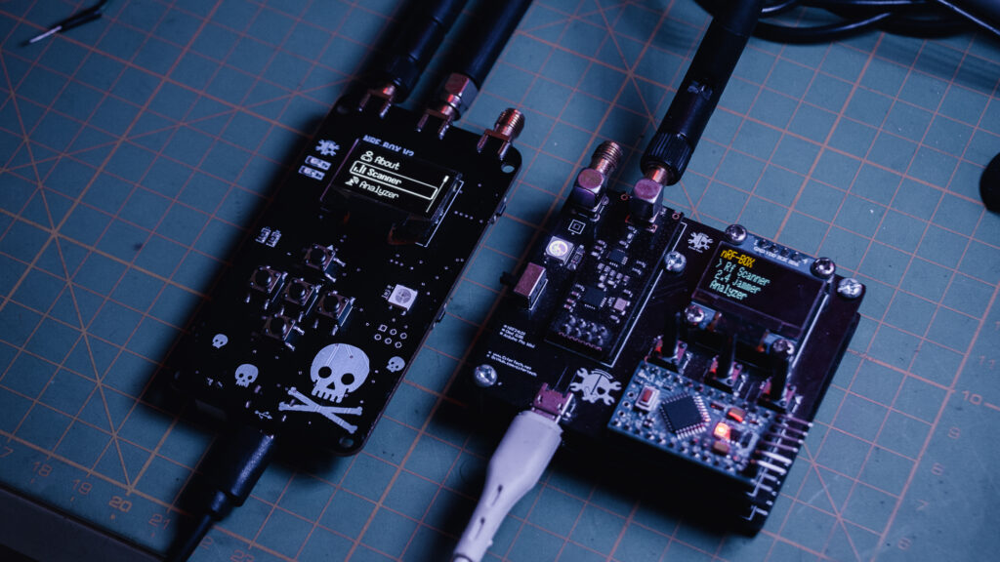
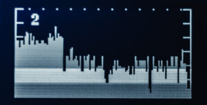
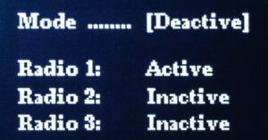
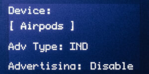
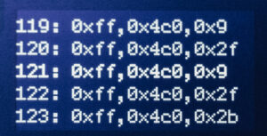
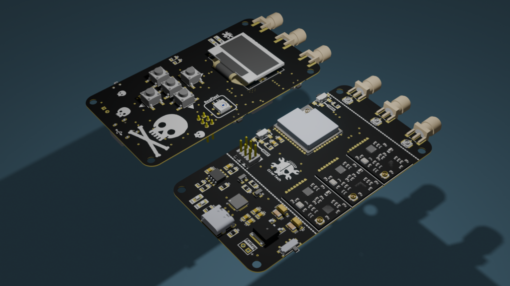

nRFBOX: Your All-in-One Gadget for BLE and 2.4GHz Networks
🌟 About the Project
The nRFBOX Project is an open-source initiative aimed at providing a comprehensive set of tools to explore the 2.4GHz spectrum, including Bluetooth and other wireless protocols. Built around the powerful ESP32 Wroom32U microcontroller, the project incorporates multiple NRF24 modules, an OLED display, and several other components, enabling users to perform spectrum analysis, jamming, spoofing, and more.
Whether you are a beginner looking to learn about wireless communication or a professional seeking a customizable toolkit for advanced tasks, this project offers a perfect blend of features, flexibility, and functionality.
🎯 Features
The nRFBOX comes packed with a variety of features, making it a powerful tool for wireless experimentation and security testing:
Software Features
• Dynamic Channel Scanning: Continuously monitors the 2.4GHz frequency band to identify active devices and channels.
• Signal Analysis: Provides detailed insights into detected signals, including signal strength and data rate, helping in identifying potential interference sources or security threats.
• Multi-Mode Jamming: Supports multiple jamming modes, such as constant, random, and selective jamming, allowing for a range of security tests.
• BLE Device Emulation: Simulates BLE devices to test the security responses of real devices in a controlled environment.
• User-Friendly Interface: Features a menu-driven UI displayed on the OLED screen for easy navigation between different modes and settings.
Hardware Features
• ESP32 Wroom32U: The main controller provides dual-core processing, integrated Wi-Fi, and Bluetooth capabilities.
• NRF24 GTmini Modules: Essential for 2.4GHz communication and jamming; three modules are recommended for advanced BLE jamming functionalities.
• 0.96″ OLED Display: A small yet high-contrast display for visual feedback and interface navigation.
• LF33 Voltage Regulator: Ensures a stable 3.3V output to power the microcontroller and other sensitive components.
• CP2102 USB-to-Serial Converter: Facilitates easy programming and debugging through USB.
• TP4056 Li-Ion Charging Module: Manages charging of the onboard Li-Po battery, including protection against overcharging.
• WS2812 Neopixel: A single RGB LED acting as a status indicator for various modes and states.
• Antenna Connector: Enhances signal strength and range for effective communication and jamming.
• Micro Switch: Provides tactile input for mode selection and user commands.
🎯 Core Functions
1. Scanner
The scanner continuously sweeps across the 2.4GHz band, identifying active channels and devices. This function is crucial for identifying potential sources of interference or threats in a given area.
2. Analyzer
The analyzer provides a deeper dive into the detected signals, offering data on signal strength, modulation, and data rates. It helps users understand the wireless environment more thoroughly.
3. Jammer
The jammer function disrupts communications on specified channels. It offers various modes, including constant, random, and selective jamming, making it useful for security testing and research.
4. BLE Jammer
Specialized in targeting BLE devices, this function disrupts Bluetooth communications within a certain range. It is most effective when using three NRF24 modules simultaneously.
5. BLE Spoofer
Simulates BLE devices to test security responses or to create controlled environments for BLE testing.
6. Sour Apple
A specialized protocol attack designed to test vulnerabilities in wireless network setups, particularly targeting specific communication protocols.
🧰 Getting Started
Step 1: Gather Your Components
To build the Wireless Toolkit, you will need the following components:
ESP32 Wroom32U
NRF24 GTmini Modules (x3 for advanced BLE jamming)
0.96″ OLED Display
LF33 Voltage Regulator
CP2102 USB-to-Serial Converter
TP4056 Li-Ion Charging Module
WS2812 Neopixel
Micro Switches
Antenna Connector
Step 2: Assembly Options
You have two options for assembly:
Breadboard Prototype: For initial testing and prototyping, you can assemble the components on a breadboard. This method is cost-effective and allows for easy modifications.
Custom PCB: For a more durable and compact setup, use the provided PCB design files to manufacture a custom PCB. Follow the assembly guide to solder all components correctly.
Step 3: Program the ESP32
Once your hardware is ready, download the code from the GitHub repository and upload it to the ESP32 using the Arduino IDE. Ensure all necessary libraries (e.g., U8g2, RF24) are installed.
🔌 Schematic
The schematic for the Wireless Toolkit project is available in the GitHub repository. It provides detailed instructions on connecting each component, ensuring all connections are accurate and secure. The schematic also includes power management details to avoid overloading any component.
• ESP32 / NRF24 Connection
| NRF24 Pin | ESP32 Pin (GPIO) |
|---|---|
| VCC | 3.3V |
| GND | GND |
| CE | GPIO 5 |
| CSN | GPIO 17 |
| SCK | GPIO 18 |
| MOSI | GPIO 23 |
| MISO | GPIO 19 |
| IRQ | Not connected |
• ESP32 / OLED Connection
| OLED Pin | ESP32 Pin (GPIO) |
|---|---|
| VCC | 3.3V |
| GND | GND |
| SCL | GPIO 22 |
| SDL | GPIO 21 |
• ESP32 / Pushbutton Connection
| Pushbutton Pin | ESP32 Pin (GPIO) |
|---|---|
| Button 1 | GPIO 27 |
| Button 2 | GPIO 26 |
| Button 3 | GPIO 25 |
| Button 4 | GPIO 33 |
| Button 5 | GPIO 32 |
👀 Use Cases
Wireless Security Testing: Ideal for professionals testing the security of wireless networks and devices.
Educational Tool: A great project for learning about wireless communication protocols, signal analysis, and jamming techniques.
Research and Development: Useful for developing and testing new wireless communication methods or devices.
Hobby Projects: Perfect for hobbyists looking to explore the world of wireless technology and DIY electronics.
Code & PCB
If you’re interested in building this project, the code and schematic are available on GitHub. Simply visit the GitHub repository to download the necessary files. Feel free to test the code and share your feedback or improvements. GitHub repository: NRF-BOX
🌟 Conclusion
Whether you choose to build it on a breadboard or manufacture a custom PCB, the nRFBOX provides a comprehensive platform for exploring the 2.4GHz spectrum and beyond. All code, schematics, and PCB are available on our GitHub repository and website, making it easy for you to start building and customizing your own toolkit today.